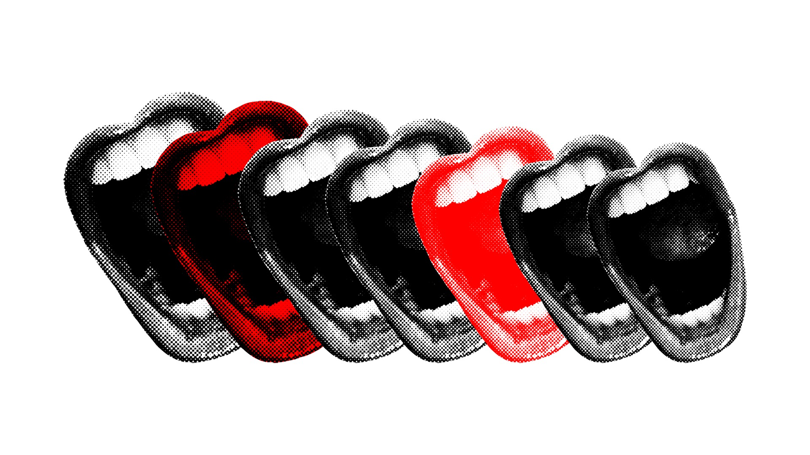
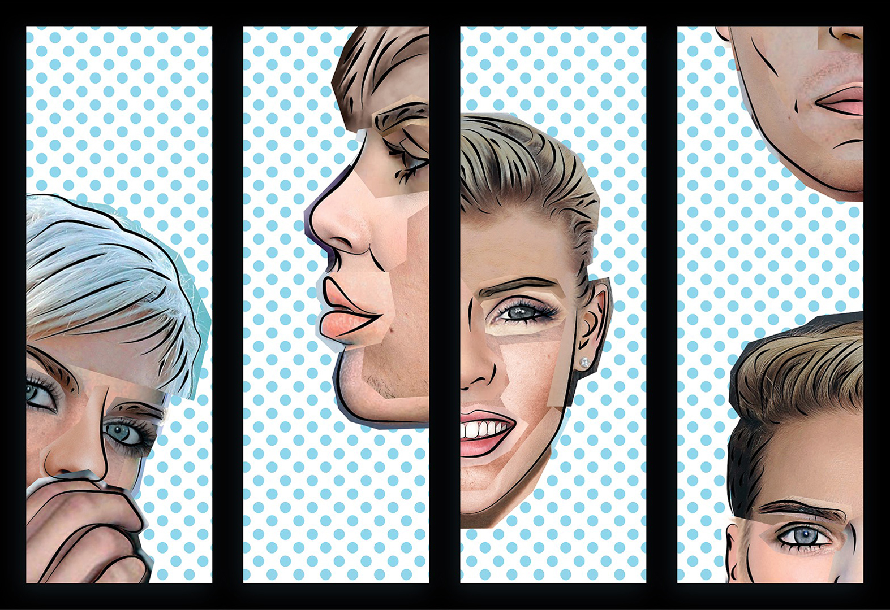
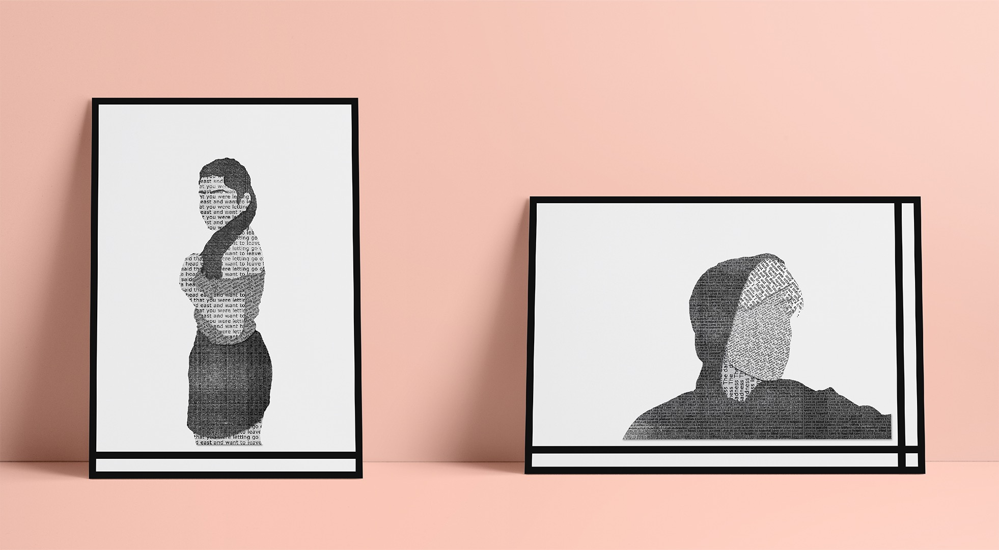
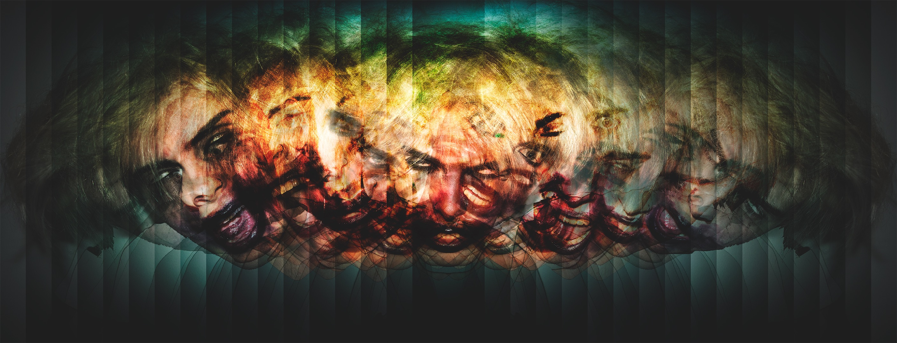
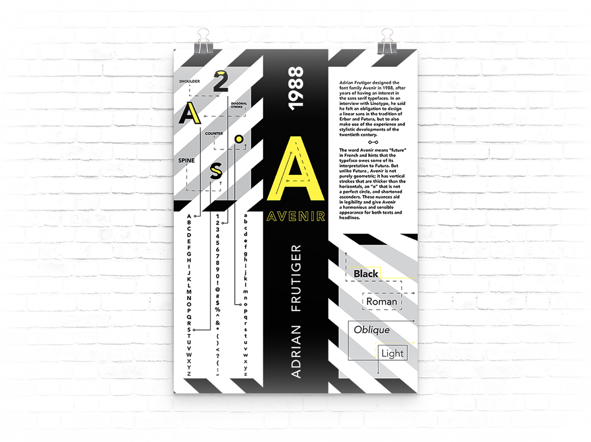

Completely random Photoshop experiment. Image from Unsplash.

Random design project.

Imaging Experimental Assignment — In my imaging class in college, everyone in the course drew a still life and then cut it up into tiny 1in x 1in squares. We then each had to sift through the squares and make a new image using pieces from everyones' still life.

Personal Typography Project — When I graduated from college during the pandemic, I began to miss working on personal projects outside of work. I had found this font on Behance called Hipster Blackletter that was incomplete, and lacked consistency between letter forms. I was inspired to rebuild the font from scratch in illustrator and added my own touch to make the font feel sharper and more modern.

Photography Assignment — This was the first Photoshop project I ever worked on back in high school for my Intro to Photography class. It was a long time ago; however, it is part of the foundation of where I am today, so that's why I keep it in my portfolio.

Illustration Assignment — Another high school project that I was proud of, and I also love Miley Cyrus so that's why I keep it in my portfolio. In retrospect, I wouldn't have distorted the letter forms like I did in some places on the face, but overall this was another piece that led me on the path I'm on today.

Personal Project — When I graduated from college during the pandemic, I found myself wanting to experiment a lot more with imagery. I found this Photoshop plug-in called 'Filter Forge,' which allows you to program custom filters. I experimented around with the different components/variables available, and created this filter that takes flat black and white images and turns them into these colorful chrome images. I thought they were really beautiful and I opened up a Society6 store with the patterns I was creating with my filter.

Personal Project — When I graduated from college during the pandemic, I found myself wanting to experiment a lot more with imagery. I found this Photoshop plug-in called 'Filter Forge,' which allows you to program custom filters. I experimented around with the different components/variables available, and created this filter that takes flat black and white images and turns them into these colorful chrome images. I thought they were really beautiful and I opened up a Society6 store with the patterns I was creating with my filter.

Personal Project — When I graduated from college during the pandemic, I found myself wanting to experiment a lot more with imagery. I found this Photoshop plug-in called 'Filter Forge,' which allows you to program custom filters. I experimented around with the different components/variables available, and created this filter that takes flat black and white images and turns them into these colorful chrome images. I thought they were really beautiful and I opened up a Society6 store with the patterns I was creating with my filter.

Personal Project — When I graduated from college during the pandemic, I found myself wanting to experiment a lot more with imagery. I found this Photoshop plug-in called 'Filter Forge,' which allows you to program custom filters. I experimented around with the different components/variables available, and created this filter that takes flat black and white images and turns them into these colorful chrome images. I thought they were really beautiful and I opened up a Society6 store with the patterns I was creating with my filter.

Graphic — A graphic I made for my high school graduation party announcements.

Imaging Assignment — In my college imaging class we made portraits inspired by different artists assigned to us. I was assigned Roy Lichtenstein. I utilized his Ben-Day Dots pattern and facial feature black lines, and then to make it my own I collaged together images from different celebrities faces to resemble me.

Multi-Media Assignment — This one is a bit tricky to explain. In one of my studio courses in college we were paired together with a partner and had to make two portraits using unusual methods. I took photographs of each of us and split them into 4 layers of different shades. Then on 4 separate layers of paper, I cut out the different shapes. Using lyrics from songs that we felt best represented ourselves, I printed out the lyrics with different shaded backgrounds. Using a method I learned in another college course, if you douse the printed paper with a product called 'Citrasolv' and rub it against another piece of paper, you can transfer the ink; similar to how temporary tattooes work.

Portrait Assignment — Photography and Photoshop project inspired by Sia's album '1000 Forms of Fear'.
Typography Assignment — This was the beginning of a branding assignment for college that I ended up going in a different direction with. The idea was to create letter forms only using circle diameters with Fibonacci Sequence ratios.

Tyography Assignment — This is the first ever tyography project I did in high school for my Intro to Graphic Design class. This project was a big moment for me because after the project was done, my teacher pulled me aside and recommended I look into a career in Graphic Design. Voila, look where I am now!

Personal Tyographic Project — This was the beginning of a font I was creating for fun. The words 'Bad Karma' was used simply because that was the name of a Miley Cyrus and Joan Jett song that had just been released.